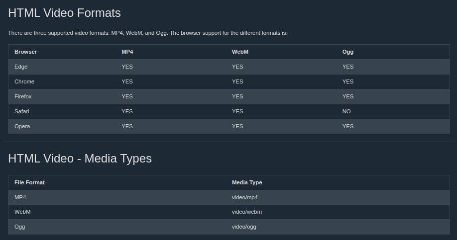

HTML Video
tag video digunakan untuk menampilkan sebuah video dalam sebuah halaman website
Source
Contoh source code
How it works
- The controls attribute adds video controls, like play, pause, and volume.
- better masukin width dan height
- source element allows you to specify alternative video files which the browser may choose from. The browser will use the first recognized format.

HTML Video - Methods, Properties, and Events
- The HTML DOM defines methods, properties, and events for the video element.
- This allows you to load, play, and pause videos, as well as setting duration and volume.
- There are also DOM events that can notify you when a video begins to play, is paused, etc.